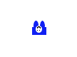

Számábrázolás

Karesz portré
Fajtái
- Karesz
- Logokaresz
A karesz és a logokaresz a tanárunk által kitalált program. A logokaresszel különböző mozaikokat kellet lerajzolnunk a programmal.
A kareszzel pedig labirntusokból való kijutás, kavicsokkal rajzolt formákat kellett leprogramoznunk.